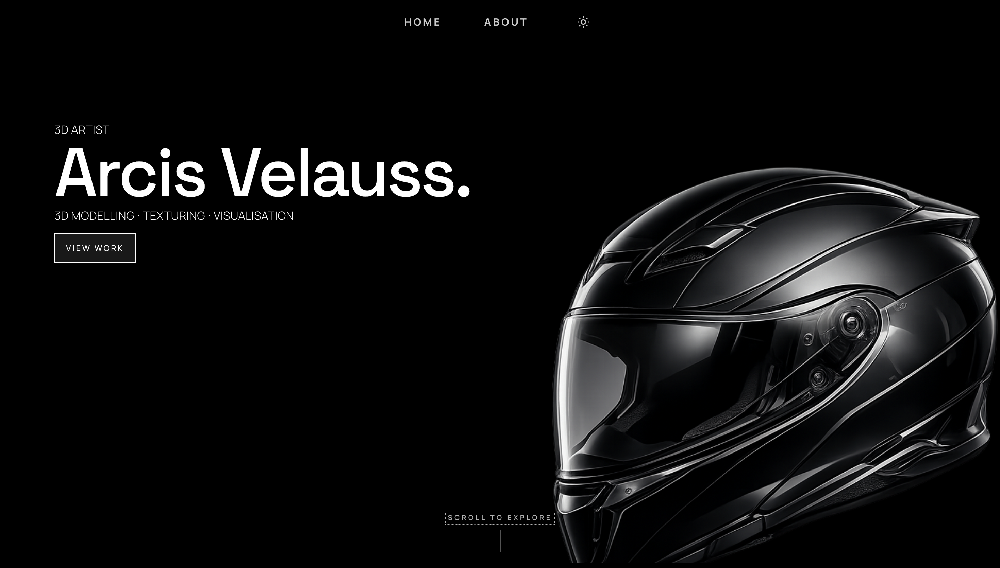

Andres Young
Software Engineer
Who is Andres?
I am a 21-year-old from the United Kingdom, who's passionate about computer science and throwing myself into coding projects in my spare time in languages like C#, JavaScript and some Python. I am also a father and a husband.
Projects

Shan's Recipe Book
A website where my fiancée can show off her cooking while also having an easy, accessible place to store and look back at her recipes whenever needed.

Tribute Website
This is a website I made for my grandad, Edley Gibbons, who unfortunately passed away last year. In memory of him.

Arcis's Portfolio
This is a portfolio website I created for a good friend of mine who is a 3D artist, Arcis Velauss, to showcase his work, skills and latest projects.

Text Changer
This is one of my earlier projects from this year, which taught me the foundations of DOM manipulation in JavaScript.

Dev Archive
A website to store all the development tools I’ve found and want to keep track of. It also has a built-in music player with a couple of songs I like.

Streamer Portfolio
This website was made for a small content creator who wanted a different way to showcase some of their content and help people learn more about who they are.
Contact Me
-
 LinkedIn/@Andres Young
LinkedIn/@Andres Young
-
 Discord/@frvrrdre
Discord/@frvrrdre
-
 GitHub/@frvrdre
GitHub/@frvrdre
I am actively looking to contribute to meaningful and exciting projects. Please feel free to reach out to me about any opportunities, big or small!